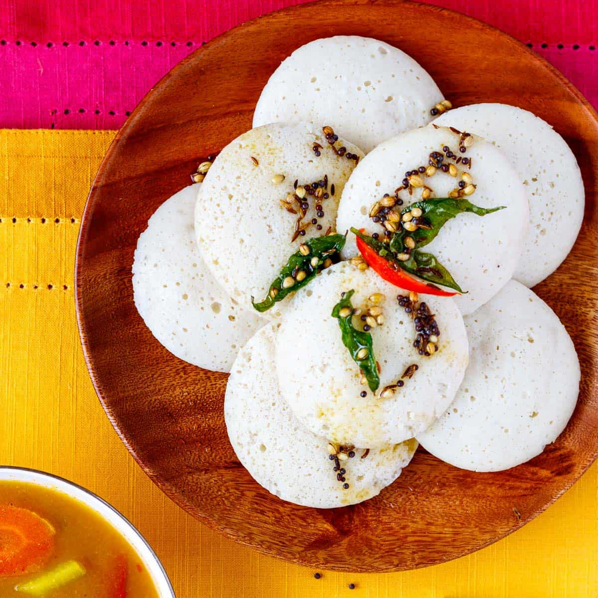
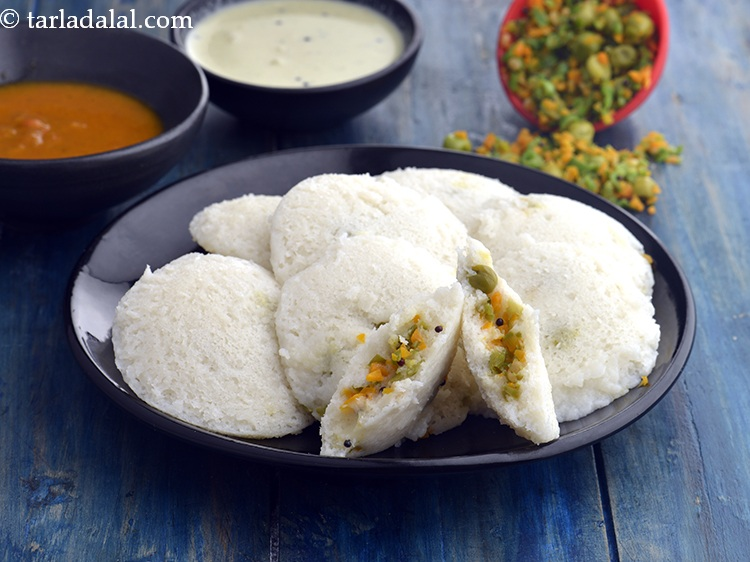
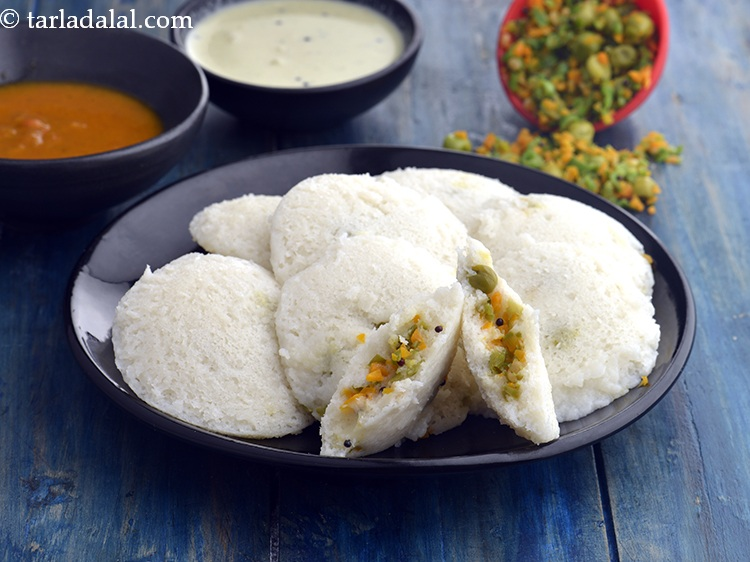
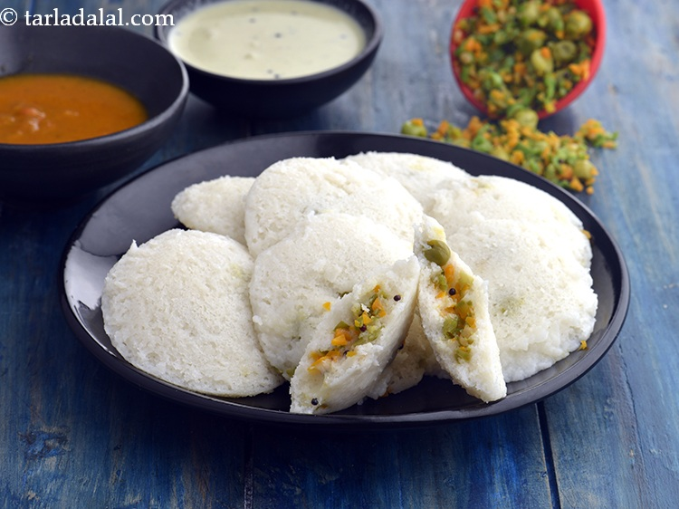

Breakfast journey #5: What is Idli?
Idli is a traditional South Indian breakfast made from fermented rice and lentils. It is soft, fluffy, and typically served with chutney and sambar.
Idli Varieties

 

